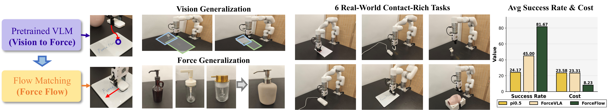
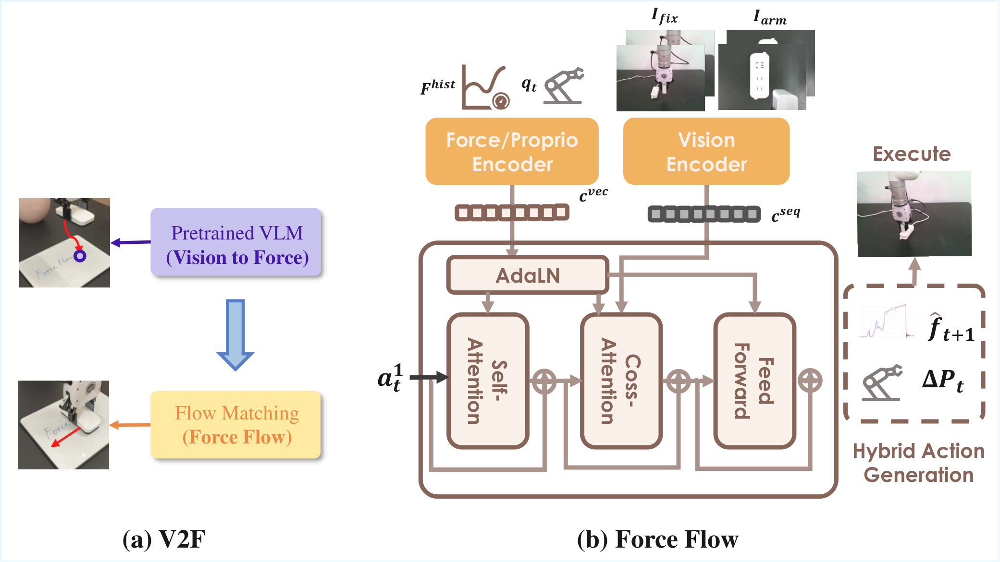
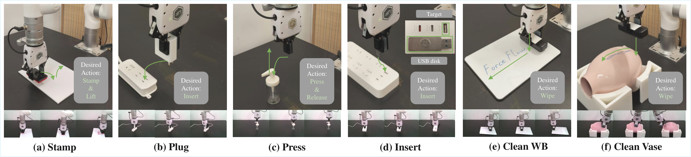
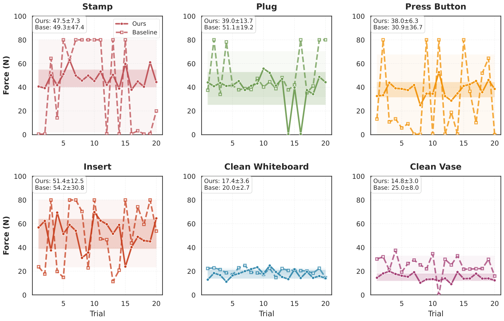
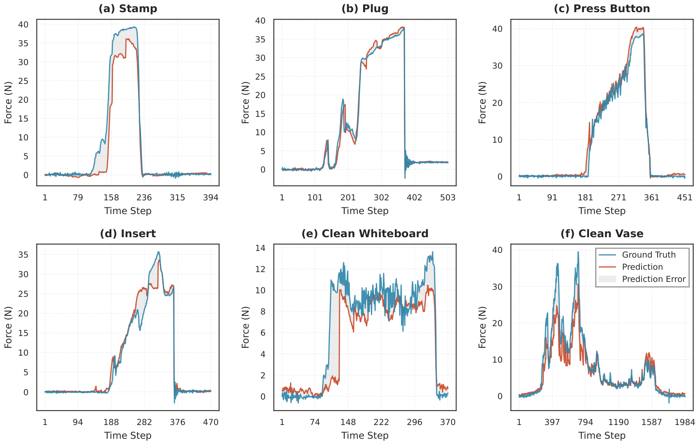
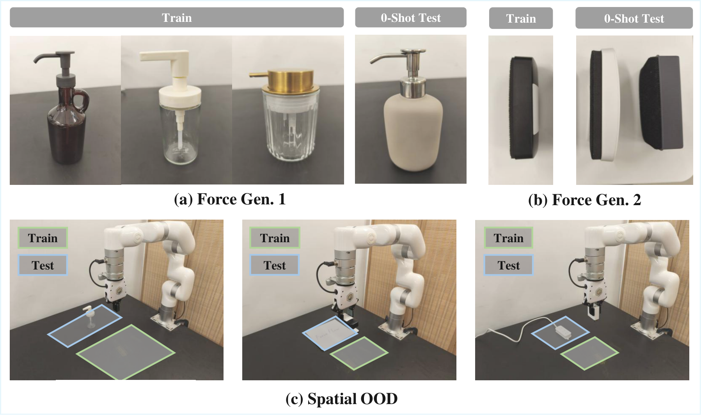

ForceFlow: Learning to Feel and Act via Contact-Driven Flow Matching
Highlights
Force-Aware Flow Matching
ForceFlow models a deterministic velocity field over a hybrid action space to jointly generate motion and target contact force.
Vision-to-Force Handover
A VLM first localizes the target, then control transitions to a force-driven policy for high-precision contact interaction.
Strong Real-World Results
Across six tasks, ForceFlow reaches 81.67% average success rate, outperforming ForceVLA by 37 percentage points.

Abstract
Existing imitation learning methods have enabled robots to interact autonomously with physical environments, but contact-rich manipulation remains challenging due to complex contact dynamics and the need for precise force control. We present ForceFlow, a force-aware reactive framework built on flow matching. ForceFlow integrates temporal force history with asymmetric multimodal fusion, and introduces a joint prediction design that outputs both action and next-step contact force. To improve robustness under spatial shifts, ForceFlow adopts a Vision-to-Force (V2F) handover: a VLM handles coarse target localization and the force-aware policy handles local contact regulation. Experiments on six real-world contact-rich tasks show that ForceFlow improves average success rate from 45% (ForceVLA) to 81.67%, while also demonstrating strong force fidelity and zero-shot OOD generalization.
Method Overview
- Temporal Force Modeling + Asymmetric Fusion: Force history is used as a global condition and visual features are integrated via cross-attention, preventing visual dominance over subtle force signals.
- Hybrid Action Generation: The model predicts a hybrid action at = [Δpt, f̂t+1], coupling motion with proactive force regulation through flow matching.
- V2F Handover: A VLM localizes semantic target points in the global scene (approach stage), then ForceFlow performs high-frequency force-aware interaction (interaction stage).

Task Suite

| Category | Task | Key Challenge |
|---|---|---|
| Short-Horizon Contact | Stamp | Visual ambiguity in paper thickness, force-triggered stamping |
| Short-Horizon Contact | Plug | Coarse visual alignment with force-guided insertion |
| Short-Horizon Contact | Press Button | Different spring constants and trigger depths |
| Short-Horizon Contact | USB Insert | Sub-millimeter tolerance and geometric jamming |
| Continuous Contact | Clean Whiteboard | Stable normal force tracking on planar surface |
| Continuous Contact | Clean Vase | Adaptive force regulation on curved, non-linear surface |
Main Results
Success Rate (SR, %, 20 trials per task)
| Method | Stamp | Plug | Press | Insert | Clean WB | Clean Vase | Avg. |
|---|---|---|---|---|---|---|---|
| pi0.5 | 0 | 60 | 30 | 45 | 10 | 0 | 24.17 |
| ACT | 0 | 30 | 5 | 0 | 15 | 0 | 8.33 |
| Diffusion Policy | 0 | 40 | 20 | 50 | 75 | 0 | 30.83 |
| ForceVLA | 20 | 70 | 65 | 15 | 100 | 0 | 45.00 |
| ForceFlow (w/o Force) | 20 | 75 | 0 | 40 | 100 | 30 | 44.17 |
| ForceFlow (Ours) | 85 | 90 | 90 | 60 | 100 | 65 | 81.67 |
Force Fidelity (MAE Cost, N, lower is better)
| Method | Stamp | Plug | Press | Insert | Clean WB | Clean Vase | Avg. |
|---|---|---|---|---|---|---|---|
| pi0.5 | 31.99 | 21.41 | 17.39 | 50.89 | 11.93 | 7.87 | 23.58 |
| ACT | 31.86 | 25.54 | 31.81 | 38.71 | 11.91 | 30.45 | 28.38 |
| Diffusion Policy | 32.26 | 15.79 | 24.86 | 23.85 | 8.22 | 23.56 | 21.42 |
| ForceVLA | 30.03 | 9.59 | 30.94 | 37.82 | 20.16 | 11.29 | 23.31 |
| ForceFlow (w/o Force) | 30.03 | 13.36 | 37.50 | 34.75 | 7.16 | 13.24 | 22.67 |
| ForceFlow (Ours) | 10.61 | 3.58 | 5.03 | 21.79 | 4.59 | 3.76 | 8.23 |


Generalization and Ablation
Zero-Shot Force Gen. (SR %)
| Method | Press | Clean WB | Clean Vase |
|---|---|---|---|
| pi0.5 | 0 | 0 | 0 |
| ACT | 0 | 0 | 0 |
| Diffusion Policy | 0 | 0 | 0 |
| ForceVLA | 40 | 90 | 0 |
| ForceFlow (Ours) | 80 | 100 | 60 |
Spatial OOD (SR %)
| Method | Press | Plug | Clean WB |
|---|---|---|---|
| pi0.5 | 0 | 0 | 0 |
| ACT | 0 | 0 | 0 |
| Diffusion Policy | 0 | 0 | 0 |
| ForceVLA | 0 | 0 | 0 |
| ForceFlow | 0 | 0 | 0 |
| ForceFlow + V2F | 40 | 10 | 50 |
Ablation (Stamp)
| Variant | SR (%) | Force (N) |
|---|---|---|
| w/o Force History (1-step) | 55 | 15.50 |
| w/o Force Prediction | 80 | 12.52 |
| w/o Both (1-step + No Pred) | 40 | 18.21 |
| ForceFlow (Full) | 85 | 10.61 |

Task Demo Videos (1X SPEED)
Stamp
Plug
Press Button
USB Insert
Clean Whiteboard
Clean Vase
BibTeX
@inproceedings{forceflow2026,
title={ForceFlow: Learning to Feel and Act via Contact-Driven Flow Matching},
author={Anonymous Authors},
booktitle={International Conference on Machine Learning (ICML), Under Review},
year={2026},
note={Preliminary manuscript},
url={https://example.com/forceflow}
}